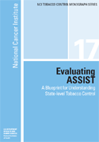

How to search within the PDF:
- Open document
- Press CTRL + F at the same time
- A search box will appear on the right side of your browser window
- Type what you are looking for
- Results will show up in the bottom part of the search box
- Click on what best fits your search
- If there is nothing that suits your search, try redefining

Monograph 17: Evaluating ASSIST A Blueprint for Understanding State-level Tobacco Control
You have the option to:
- Download the entire monograph (4,186 kb)
- Download only the chapters you are interested in (see below)
- Order a hard copy by calling the National Cancer Institute's Cancer Information Service at 1-800-4-CANCER (1-800-422-6237) or visiting NCI's Publications Locator Web site.
Entire Monograph (4,186 kb)
Navigate within the PDF by clicking on the bookmarks on the left to jump to the appropriate chapter. Or, click on the search button in the top toolbar (binoculars icon) and enter a keyword or phrase in the text box. Click on the links in the results window to jump to the appropriate page.
Table of Contents:
- Other NCI Tobacco Control Monographs (50 kb)
- Dedication (24 kb)
- A Note from the Series Editor (42 kb)
- Foreword (45 kb)
- Preface (90 kb)
- The American Stop Smoking Intervention Study for Cancer Prevention (ASSIST) (49 kb)
- Acronyms List (23 kb)
- Acknowledgments (52 kb)
- Contents (38 kb)
- Chapter 1
The ASSIST Evaluation Project: An Overview (278 kb)- Introduction
- The ASSIST Evaluation
- Summary
- Conclusions
- References
- Chapter 2
The Strength of Tobacco Control Index (1,860 kb)- Introduction
- Development of the Strength of Tobacco Control Index
- Collection, Analysis, and Validation of SoTC Data
- Results of SoTC
- Use of the SoTC to Evaluate Individual State Programs
- Summary
- Conclusions
- References
- Chapter 3
Measuring Policy and Legislative Changes (154 kb)- Introduction
- State and Local Government Action for Tobacco Use Prevention and Control
- The Value of Monitoring Policy and Legislative Changes
- Methods for Rating the Comprehensiveness of Tobacco Control Laws
- State and State+Local Rating Results
- Summary
- Conclusions
- References
- Chapter 4
Initial Outcomes Index (306 kb)- Introduction
- Tobacco Use Outcome Measures
- Defining and Selecting Initial Outcomes
- Initial Outcomes Selected for the ASSIST Evaluation
- The IOI for Policy
- Summary
- Conclusions
- References
- Chapter 5
State Facilitating Conditions and Barriers to Implementation of Tobacco Control Programs (146 kb)- Introduction
- Overview of Influences
- State Conditions Selected for the ASSIST Evaluation
- Data Sources
- Other Potential Covariates
- Summary
- Conclusions
- References
- Chapter 6
Measuring the Impact of Tobacco on State Economies (331 kb)- Introduction
- Background
- Studies on the Economic Impact of Tobacco
- Measuring the Economic Impact of Tobacco for ASSIST
- State Data and Trends
- Summary
- Conclusions
- References
- Chapter 7
The ASSIST Newspaper Tracking System (174 kb)- Introduction
- The Challenge of Measuring the Effect of Media Interventions
- Tracking the Articles
- Trend Analyses
- Summary
- Conclusions
- References
- Chapter 8
Evaluating Tobacco Industry Tactics as a Counterforce to ASSIST (318 kb)- Introduction
- Expert-based Conceptual Map of Industry Tactics
- Review of the Published Literature on Tobacco Industry Tactics
- Review of Tobacco Industry Documents
- Tobacco Industry Tactics: An Evaluation Challenge
- Summary
- Conclusions
- References
- Chapter 9
Final Outcomes: Analytical Methods and Results (754 kb)- Introduction
- Overall Considerations for Analysis
- Adult Smoking Prevalence
- Per Capita Cigarette Consumption
- Primary Results
- Secondary Results (SoTC and IOI Analyses)
- Summary
- Conclusions
- References
- Chapter 10
Cost-effectiveness of ASSIST (140 kb)- Introduction
- A Cost-effectiveness Analysis: The Basic Approach
- Cost-effectiveness: ASSIST
- Summary
- Conclusions
- References
- Chapter 11
The ASSIST Evaluation: Contributions to Evaluation of Complex Public Health Initiatives (132 kb)- Introduction
- Challenges to Evaluating ASSIST
- Response to Evaluation Challenges
- Key Findings of the ASSIST Evaluation
- What Do These Results Mean?
- The Legacy of the ASSIST Evaluation
- The Future of Tobacco Control
- Using the ASSIST Evaluation Approach for Other Public Health Initiatives
- Summary
- Conclusions
- References
- Index (114 kb)
Ordering Information
This monograph can be ordered by calling the National Cancer Institute's Cancer Information Service at 1-800-4-CANCER (1-800-422-6237) or visiting NCI's Publications Locator Web site.